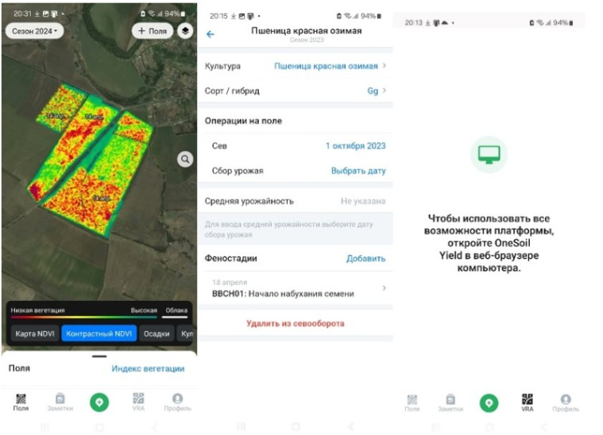
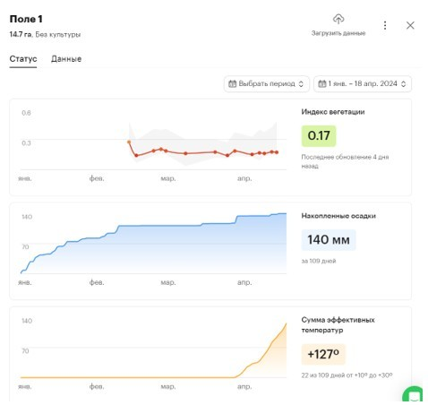
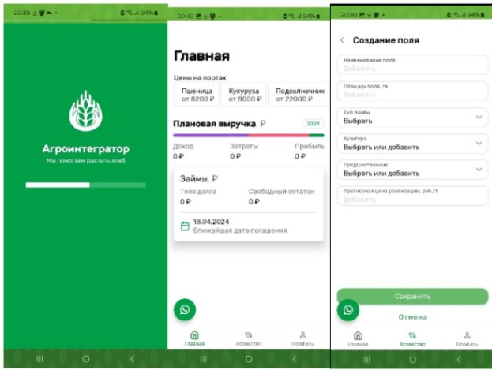

Современный аграрный сектор находится на пороге четвёртой промышленной революции, где цифровизация становится критическим фактором конкурентоспособности и устойчивости [1]. Одной из наиболее сложных задач в растениеводстве является управление севооборотом — научно обоснованным чередованием сельскохозяйственных культур на полях. Традиционные методы планирования, основанные на эмпирическом опыте, не способны учесть всю совокупность динамически изменяющихся агротехнических, климатических и экономических факторов [2], [3]. В этой связи разработка интеллектуальной Системы поддержки принятия решений (СППР), способной автоматизировать и оптимизировать этот процесс, является актуальной научно-практической задачей, направленной на повышение эффективности и экологической устойчивости сельскохозяйственных предприятий.
Реферат
Система поддержки принятия решений для управления севооборотом в условиях цифровой трансформации АПК
1. Введение
2. Обзор методов и подходов к автоматизации управления севооборотом
2.1. Особенности управления севооборотом
Управление севооборотом представляет собой сложный, многофакторный процесс, оказывающий долгосрочное влияние на агроэкосистему [4]. В отличие от монокультуры, севооборот обеспечивает сбалансированное использование почвенных ресурсов, способствуя сохранению и улучшению плодородия почвы, повышению урожайности и предотвращению распространения болезней и вредителей [5]. Ключевыми особенностями являются:
- необходимость одновременного учета типа почвы, климатических условий, биологических особенностей культур, их взаимного влияния и потребностей в питательных веществах [4], [6];
- влияние выбранной схемы чередования культур на физические, химические и биологические свойства почвы проявляется на протяжении нескольких лет [4];
- эффективное распределение ограниченных ресурсов (вода, удобрения, техника, трудовые затраты) для максимизации экономической выгоды и минимизации экологической нагрузки [7].
2.2. Системы поддержки принятия решений в аграрной отрасли
СППР представляют собой компьютерные системы, помогающие специалистам в принятии решений на основе анализа больших объемов данных и моделирования [8]. Для управления севооборотом используются СППР, которые могут быть классифицированы как активные (непосредственно вырабатывающие решение), пассивные (помогающие в процессе) и кооперативные (предполагающие итеративное взаимодействие с пользователем) [8]. Ключевыми компонентами такой СППР являются:
- модуль сбора и хранения данных (почва, погода, история полей);
- модуль моделирования и анализа для расчета сценариев;
- экспертная система, содержащая формализованные знания агрономов;
- модуль поддержки принятия решений, интегрирующий результаты анализа;
- пользовательский интерфейс для визуализации и взаимодействия [8], [9].
2.3. Обзор моделей и методов, используемых в СППР
Для решения задачи оптимизации севооборота применяется широкий спектр математических методов, каждый из которых имеет свои преимущества и недостатки [10]:
- модели линейного программирования (ЛП): полезны для оптимизации распределения ресурсов при заданных линейных ограничениях. Преимущества — простота реализации и масштабируемость. Недостаток — неспособность адекватно отражать нелинейные зависимости, характерные для биологических систем [11];
- модели дискретного программирования: эффективны для задач, где переменные принимают дискретные значения (выбор культуры для поля). Позволяют учитывать сложные агротехнические ограничения, но обладают высокой вычислительной сложностью [12];
- эвристические методы оптимизации:
- генетические алгоритмы (GA), имитирующие естественный отбор, демонстрируют гибкость и способность находить глобальные решения в условиях многокритериальности и неопределенности, но требуют careful настройки параметров и времени для вычислений [13];
- метод роя частиц (PSO), основанный на коллективном поведении, прост в реализации и часто сходится быстрее GA, но может «застревать» в локальных оптимумах [14].
- Методы машинного обучения:
- градиентный бустинг (GB) и нейронные сети (NN) используются для прогнозирования урожайности. Они обеспечивают высокую точность при работе с большими данными и нелинейными зависимостями, но требуют большого объема качественных данных для обучения, а их модели сложно интерпретировать («черный ящик») [15], [16].
3. Существующие приложения и обоснование разработки новой системы
На мировом рынке представлен ряд мобильных приложений для агроменеджмента, таких как Agrobase, FarmDok, Caynax Gardener и другие. Однако для российского агрария наиболее релевантны и доступны лишь два приложения: OneSoil Scouting и AgroIntegratorApp [17], [18].
3.1. OneSoil Scouting
Название системы: OneSoil Scouting [17]. Компания-разработчик: OneSoil.
OneSoil Scouting относится к классу агротехнологических систем. Ее основное назначение - предоставление агрономам и фермерам инструментов для мониторинга состояния полей и принятия обоснованных решений по управлению посевами. Интерфейс приложения представлен на рисунке 1.1.

OneSoil Scouting использует передовые технологии в области искусственного интеллекта, обработки изображений, аналитики данных, а также технологии связи для сбора данных с дронов и спутников.
Система OneSoil Scouting имеет клиент-серверную архитектуру, где мобильное приложение представляет клиентскую часть, а серверная часть отвечает за обработку и анализ данных.
Само приложение является бесплатным для работы с 3 полями, далее цена зависит от количества гектар полей, помимо этого внедрение дронов и разнообразных датчиков отслеживания стоит денег. Пример вывода отчета в приложении представлен на рисунке 1.2.

Достоинства:
- удобно следить за развитием растений;
- рассчитывает индекс вегетации NDVI;
- показывает прогноз погоды на ближайшие 5 дней, карту осадков в реальном времени;
- показывает рекомендации по времени опрыскивания;
- позволяет планировать будущее сезоны;
- наглядность информации;
- просмотр истории полей.
Недостатки [19]:
- неудобный интерфейс;
- много ненужной информации;
- недостоверная информация на картах;
- мобильно приложение имеет ограниченные возможности в отличие о серверной части;
- отсутствие некоторых необходимых проверок дат;
- нет возможности учёта применяемых химических и минеральных удобрений;
- веб версия в ДНР работает исключительно с VPN;
- сбои в приложении.
3.2. AgroIntegratorApp
Название системы: AgroIntegratorApp [18]. Компания-разработчик: AgroTech Solutions Ltd.
AgroIntegratorApp относится к классу ERP-систем (систем управления предприятием) и предназначена для управления всеми аспектами сельскохозяйственного предприятия, включая учет посевов, управление запасами, финансовый учет, управление персоналом и многое другое. Основная цель системы - оптимизировать процессы и повысить эффективность работы предприятия. Приложение направлено на зерновое хозяйство. Интерфейс приложения представлен на рисунке 1.3.

AgroIntegratorApp разработана на основе современных технологий программирования, таких как Java, JavaScript, SQL для работы с базами данных и прочие.
Приложение является бесплатным.
Достоинства:
- ведется учет затрат и доходов;
- прогноз необходимых затрат на сезон по всему хозяйству;
- прогнозирует валовый доход сезона;
- предлагает оптимальные культуры для сева с позиции рационального севооборота и экономики.
Недостатки [20]:
- поддерживает только определенные области РФ;
- неудобный интерфейс;
- сбой в приложении при выполнении некоторых действий;
- нет карты;
- нет возможности учёта применяемых химических и минеральных удобрений.
3.3. Сравнительный анализ и обоснование разработки
Сравнительный анализ, приведенный в таблице 1, наглядно демонстрирует ключевые проблемы существующих решений.
| Параметр | OneSoil Scouting | AgroIntegratorApp |
|---|---|---|
| Название системы | OneSoil Scouting | AgroIntegratorApp |
| Компания-разработчик | OneSoil | AgroTech Solutions Ltd |
| Класс системы | Агротехнологическая ERP | ERP-система |
| Основное назначение | Предоставление инструментов для мониторинга состояния полей и принятия обоснованных решений по управлению посевами | Управление всеми аспектами сельскохозяйственного предприятия |
| Технологии | Искусственный интеллект, обработка изображений, аналитика данных, технологии связи, облачные технологии, интеграция с другими системами | Интеграция с другими системами, SQL, аналитика данных |
| Стоимость | Бесплатное приложение для работы с 3 полями, далее платное; Внедрение дронов и датчиков отслеживания стоит денег | Бесплатное приложение |
| Особенности | Клиент-серверная архитектура | Не указаны |
| Достоинства | Удобно следить за развитием растений, расчет индекса вегетации NDVI, прогноз погоды на ближайшие 5 дней, рекомендации по времени опрыскивания, планирование будущих сезонов, наглядность информации, просмотр истории полей | Учет затрат и доходов, прогноз затрат и валового дохода, предлагает оптимальные культуры для сева, рациональный севооборот и экономика |
| Недостатки | Неудобный интерфейс, много ненужной информации, недостоверная информация на картах, ограниченные возможности мобильного приложения, отсутствие некоторых необходимых проверок дат, отсутствие учета химических и минеральных удобрений, веб-версия работает только с VPN, сбои в приложении | Не поддерживает определенные области РФ, неудобный интерфейс, сбой в приложении при выполнении действий, отсутствие карты и учета химических и минеральных удобрений |
Вывод: существующие приложения решают задачи лишь частично, не предлагая комплексного, удобного и надежного инструмента для российских аграриев. Выявленные недостатки, такие как неудобный интерфейс, отсутствие учета удобрений, региональные ограничения и нестабильная работа, напрямую снижают эффективность их использования [17], [18], [21]. Это создает устойчивую потребность и полное обоснование для разработки новой СППР, которая учтет эти ошибки и предложет целостное решение, объединяющее точный мониторинг, агрономический учет и экономическое планирование в одном удобном интерфейсе.
4. Математическая постановка задачи и выбор методов решения
4.1. Постановка задачи оптимального планирования севооборота
Цель правильного севооборота — обеспечение устойчивой продуктивности почв, повышение урожайности, снижение фитосанитарных рисков и рациональное использование агроресурсов. В условиях цифровизации аграрной отрасли возникает потребность в автоматизации процессов планирования севооборота с использованием систем поддержки принятия решений.
Задача оптимального планирования севооборота заключается в том, чтобы определить, какие культуры и в какой последовательности необходимо размещать на конкретных полях в течение заданного периода времени таким образом, чтобы одновременно удовлетворить агротехнические, климатические, ресурсные и экономические ограничения и достичь наилучших показателей по урожайности, прибыльности и устойчивости агросистемы.
Основные входные данные для задачи:
- набор полей с известными характеристиками (тип почвы, площадь, индекс деградации и др.);
- набор культур с агротехническими свойствами (предшественники, требования к почве, ресурсоёмкость, период возврата);
- планируемый горизонт планирования T лет [10];
- исторические и прогнозируемые климатические данные (осадки, температура, риск засухи);
- прогнозные показатели урожайности для каждой культуры на каждом поле;
- экономические параметры: цена реализации, затраты на возделывание, бюджет на сезон;
- экологические нормативы (ограничения на деградацию почвы, нормы чередования культур).
Требования и ограничения:
- Агротехнические ограничения:
- каждая культура может выращиваться на одном и том же поле только через установленный интервал (например, 2 или 3 года);
- запрет на повторное выращивание культур, угнетающих почву или провоцирующих болезни;
- учет предшественников: некоторые культуры усиливают или подавляют рост последующих.
- Ресурсные ограничения:
- совокупные затраты на семена, удобрения и обработку не должны превышать выделенный бюджет;
- ограничения на технику, воду, трудовые ресурсы — по сезонам и культурам.
- Экологические ограничения:
- максимально допустимая нагрузка на почву;
- недопущение истощения и загрязнения почвы.
- Климатические ограничения:
- соответствие климатических условий требованиям выбранной культуры в заданном году;
- учет климатических рисков (например, засухоустойчивость).
Цели (критерии оптимизации):
- максимизация общей урожайности за весь период по всем полям;
- максимизация прибыли от реализации собранной продукции;
- минимизация деградации почв и поддержание их плодородия;
- снижение фитосанитарного риска за счёт рационального чередования культур.
4.2. Математическая модель
Математическая модель включает целевую функцию и систему ограничений [10].
4.2.1 Функция цели
где:
Yi — прогнозируемая урожайность i-й культуры;
Ci — затраты на выращивание i-й культуры;
Ei — экологические издержки.
Задача заключается в максимизации экономического и экологического эффекта. Здесь прибыль от урожайности уменьшается на затраты и экологические издержки. Все параметры должны быть приведены к одной системе измерения (в денежном эквиваленте за гектар).
4.2.2 Ограничения
Площадь посевов:
где:
Ai — площадь под i-ю культуру;
Aобщ — общая доступная площадь.
Ресурсные ограничения (вода, удобрения):
где:
Rисп — использованные ресурсы;
Rдоступ — доступные ресурсы.
где:
ri — потребность i-й культуры в ресурсе (на единицу площади).
Севооборот:
где:
Cjt — культура j-го поля в t-й год;
k — период ротации культур.
Данная математическая модель учитывает экономические, экологические и ресурсные параметры, что делает ее пригодной для построения эффективной СППР управления севооборотом. Интеграция алгоритмов оптимизации в программное обеспечение позволит повысить точность прогнозов и улучшить планирование сельскохозяйственной деятельности.
Проведённый анализ показал, что для решения задачи автоматизированного управления севооборотом необходимо использовать методы, способные учитывать многокритериальность, неполноту и вариативность входных данных. В связи с этим в данной работе были выбраны два основных метода: генетический алгоритм, позволяющий находить приближённые оптимальные решения в условиях сложных ограничений, и искусственная нейронная сеть, обеспечивающая точное прогнозирование урожайности на основе агроклиматических и исторических данных. Совместное применение этих методов обеспечивает как гибкость в формировании схем севооборота, так и адаптивность системы к конкретным условиям хозяйства. Такой подход позволяет создать интеллектуальную систему поддержки принятия решений, ориентированную на практическое применение в аграрной отрасли.
4.3 Выбор метода прогнозирования урожайности (нейронная сеть)
Одним из ключевых компонентов системы поддержки принятия решений при планировании севооборота является механизм оценки прогнозной урожайности сельскохозяйственных культур. Урожайность зависит от множества факторов: агрохимических характеристик почвы, погодных условий, культуры-предшественника, агротехнических приёмов, климатических аномалий и др. Эта зависимость носит сложный, зачастую нелинейный характер и не поддаётся адекватному моделированию классическими статистическими методами.
Для получения достоверных и адаптивных прогнозов необходимо использовать интеллектуальные методы, способные выявлять скрытые зависимости и обучаться на реальных аграрных данных. Одним из таких инструментов является искусственная нейронная сеть (ИНС), обладающая высокой универсальностью и способностью к аппроксимации нелинейных функций любой сложности.
По сравнению с линейными и регрессионными моделями, нейронные сети обеспечивают следующие преимущества:
- обработка многомерных и взаимозависимых факторов (влажность почвы, температура, тип предшественника и др.);
- высокая точность при наличии достаточного обучающего набора;
- адаптация к новой информации — возможность дообучения;
- работа с неполными или зашумлёнными данными.
Учитывая эти особенности, нейросетевой подход наиболее обоснован для решения задачи прогнозирования урожайности в рамках СППР [16].
В данной работе используется многослойный перцептрон (MLP) — классическая полносвязная нейронная сеть прямого распространения, состоящая из:
- входного слоя — принимающего вектор признаков;
- одного или нескольких скрытых слоёв — обрабатывающих данные через нелинейные функции активации;
- выходного слоя — формирующего прогнозное значение урожайности.
Входные данные (признаки):
- тип культуры (однократно кодируется через one-hot encoding);
- тип и свойства почвы (гранулометрический состав, кислотность, содержание гумуса);
- культура-предшественник (влияет на биологическую совместимость и плодородие);
- среднегодовая температура и сумма осадков за сезон;
- индекс засушливости сезона (SPI или аналог);
- год (номер сезона) — если используется трендовая информация.
Целевой признак: прогноз урожайности культуры (т/га) на заданном поле в заданный год.
Использование искусственной нейронной сети для прогнозирования урожайности обосновано наличием многомерных и нелинейных зависимостей между агропроизводственными факторами. Выбранная архитектура MLP обеспечивает высокую точность и адаптивность модели, позволяя интегрировать прогнозы в оптимизационные алгоритмы СППР. Это делает нейросеть ключевым компонентом интеллектуального планирования севооборота [22].
4.4 Выбор метода оптимизации схемы севооборота (генетический алгоритм)
Планирование оптимального севооборота представляет собой задачу комбинаторной многокритериальной дискретной оптимизации, в которой необходимо определить наилучшее размещение сельскохозяйственных культур на множестве полей в течение нескольких лет. При этом должны одновременно учитываться агрономические, экономические, климатические, ресурсные и экологические ограничения. Решение такой задачи с ростом числа полей, культур и лет быстро переходит в область вычислительной сложности NP-полного класса.
Классические методы линейного и целочисленного программирования оказываются малопригодными в условиях:
- жёстких и нелинейных агротехнических ограничений;
- неструктурированных и неполных входных данных;
- необходимости учитывать несколько конфликтующих критериев (урожайность, прибыль, почвозащита и т. д.);
- потребности в гибкой адаптации под хозяйство и сценарий.
В таких условиях наиболее эффективными становятся эвристические методы оптимизации, способные находить приближённые решения высокого качества за разумное время. Среди них особое место занимают генетические алгоритмы (ГА) — один из основных инструментов эволюционных вычислений, имитирующий принципы естественного отбора и наследственности.
Почему выбран генетический алгоритм [23]:
- ГА легко адаптируется под любые типы ограничений, включая агротехнические (запрет на повтор, период возврата, культура-предшественник и т. д.);
- позволяет работать с дискретными переменными, бинарными или целочисленными кодировками;
- способен эффективно исследовать большое пространство решений без необходимости полного перебора;
- хорошо подходит для задач с множественными целями, в том числе конфликтующими;
- легко масштабируется на большее число полей и лет;
- может быть объединён с машинным обучением (например, прогноз урожайности нейросетью используется в фитнес-функции).
Общая схема генетического алгоритма для задачи севооборота:
- Хромосома — кандидат-схема севооборота:
- представляет собой трёхмерную структуру, отражающую выбор культур по полям и годам;
- кодируется, например, как одномерный вектор или матрица индексов культур.
- Инициализация популяции:
- генерируются случайные допустимые хромосомы (с учётом базовых агрономических правил);
- размер популяции определяется эмпирически.
- Оценка приспособленности (fitness):
- включает целевые показатели:
- суммарная прибыль (на основе прогнозов урожайности от нейросети);
- сохранение плодородия почв (учёт культуры-предшественника и индекса деградации);
- выполнение агротехнических норм;
- общая функция может быть как аддитивной, так и векторной (в многокритериальных задачах).
- включает целевые показатели:
- Селекция (отбор родителей)[24]:
- используются стандартные методы: рулетка, турнирный отбор, отбор элиты.
- Скрещивание и мутация [25]:
- кроссовер (одно- или двухточечный) создает новое поколение;
- мутации вносят случайные изменения, способствуя диверсификации популяции;
- операторы адаптированы под агротехнические ограничения: мутация не должна формировать недопустимые последовательности культур.
- Завершение алгоритма:
- по достижении заданного числа поколений или стабилизации значений приспособленности.
Особенности применения в данной разработке:
- гибкость: структура хромосомы и операторы ГА легко адаптируются под изменяющиеся параметры хозяйства;
- интеграция с нейросетью: прогнозируемая урожайность включается в оценку фитнеса;
- многокритериальность: можно управлять приоритетами между прибылью, плодородием и устойчивостью;
- автоматизация: ГА реализуется в модуле оптимизации СППР и работает в фоновом режиме от пользовательского интерфейса.
Генетический алгоритм выбран в качестве основного метода оптимизации схемы севооборота благодаря его способности эффективно решать сложные дискретные задачи при наличии множества ограничений и целей. Он обеспечивает баланс между качеством решений, вычислительной сложностью и адаптивностью. Интеграция ГА в состав системы поддержки принятия решений позволяет получить реалистичные и практически применимые схемы севооборота, учитывающие реальные агротехнические и климатические условия [13].
Совместное применение ИНС для точного прогноза и ГА для комбинаторной оптимизации создает мощный аппарат для построения эффективной СППР.
5. Заключение и выводы
Проведенное исследование подтверждает высокую актуальность и практическую значимость разработки интеллектуальной СППР для управления севооборотом.
Основные выводы:
- Управление севооборотом является сложной многокритериальной задачей, требующей учета долгосрочных агроэкологических последствий и оптимального распределения ресурсов.
- Анализ существующих на рынке приложений (OneSoil Scouting, AgroIntegratorApp) выявил их ключевые недостатки: неудобный интерфейс, отсутствие учета удобрений, региональные ограничения и нестабильность работы, что обосновывает необходимость создания нового конкурентоспособного продукта.
- Для построения ядра СППР оптимальной является комбинация методов искусственного интеллекта: искусственной нейронной сети для точного прогнозирования урожайности и генетического алгоритма для поиска оптимальной схемы севооборота в условиях множества ограничений.
- Математическая постановка задачи адекватно отражает реальные производственные условия, формализуя экономические, экологические и агротехнические аспекты в виде целевой функции и системы ограничений.
Таким образом, создание предлагаемой системы является своевременным и перспективным шагом на пути к цифровой трансформации отечественного АПК, позволяющим перейти от интуитивного к научно обоснованному, оптимальному управлению сельскохозяйственным производством.
6. Список использованных источников
- 1. Ступина А.А., Рожкова А.В., Оленцова Ю.А., Рожков С.Е. Цифровизация как основной вектор развития сельскохозяйственного сектора // Азимут научных исследований: экономика и управление. – 2021. – [Электронный ресурс]. – URL: https://www.elibrary.ru/item.asp?id=47929672.
- 2. Ляшенко Ю.А., Шумаева Е.А. К вопросу о цифровизации аграрной отрасли // Мировая экономика: вчера, сегодня, завтра. – Донецк, 2023. – [Электронный ресурс]. – URL: https://www.elibrary.ru/item.asp?id=61334119 (дата обращения: 29.10.2024).
- 3. Амирова Е.Ф., Гаврильева Н.К., Григорьев А.В., Соргунов И.В. Цифровизация в сельском хозяйстве: проблемы внедрения // Siberian Journal of Life Sciences and Agriculture. – 2021. – [Электронный ресурс]. – URL: https://cyberleninka.ru/article/n/digitalization-in-agriculture-problems-of-implementation.
- 4. Ляшенко Ю.А. Отчет о производственной практике // Донецкий национальный технический университет. – Донецк, 2025.
- 5. Сидоров М.И., Зезюков Н.И. Научные и агротехнические основы севооборотов. – Научное издание. - Воронеж.: Изд-во ВГУ, 1993. - 104 с. ISBN: 5-7455-0719-5 – [Электронный ресурс]. – URL: https://www.elibrary.ru/item.asp?id=23677053 (дата обращения: 29.10.2024).
- 6. Гурджиев Г., Атагельдиев Ш., Сетдаров С., Джумаева А. БОЛЬШИЕ ДАННЫЕ В АГРОСЕКТОРЕ: КАК АНАЛИЗ ИНФОРМАЦИИ ПОМОГАЕТ В ПРИНЯТИИ РЕШЕНИЙ // IN SITU. 2024. №12. . [Электронный ресурс]. – URL: URL: https://cyberleninka.ru/article/n/bolshie-dannye-v-agrosektore-kak-analiz-informatsii-pomogaet-v-prinyatii-resheniy.
- 7. Xiao Z., Zhang Z., Sang W. Optimizing Agricultural Planting Strategies with Linear Programming and MOPSO // Vol. 45 (2024): 3rd International Conference on Economics, Mathematical Finance and Risk Management (EMFRM 2024). – [Электронный ресурс]. – DOI: https://doi.org/10.54097/qk7rgk29.
- 8. Мельникова О.В. Основы научных исследований в агрономии: учебно-методическое пособие для студентов, обучающихся по программе бакалаврской подготовки по направлению 110400.62 - "Агрономия" (профиль "Луговые ландшафты и газоны"). – Брянск: Брянский государственный аграрный университет, 2014. – 57 с. – [Электронный ресурс]. – URL: https://www.elibrary.ru/item.asp?id=23550916.
- 9. Информационные системы и технологии в АПК: учебное пособие / А.В. Бабкина, И.Е. Быстренина, М.И. Горбачев [и др.]; Российский государственный аграрный университет - МСХА имени К.А. Тимирязева. – Москва: ООО "Мегаполис", 2023. – 420 с. – ISBN 978-5-605-06608-8. – [Электронный ресурс]. – URL: https://www.elibrary.ru/item.asp?id=63292810.
- 10. Цуркан Ю.В. Применение современных цифровых технологий при организации угодий и севооборотов // Студенческий. – 2025. – № 20-8 (316). – С. 66-69. – ISSN 2541-9412. – [Электронный ресурс]. – URL: https://www.elibrary.ru/item.asp?id=82440381.
- 11. Будько В.И., Меденников В.И. Математическая модель оптимизации структуры севооборотов на основе единой цифровой платформы управления сельскохозяйственным производством // Системы высокой доступности. – 2022. – Т. 18, № 4. – С. 5-15. – ISSN 2072-9472. – [Электронный ресурс]. – URL: https://www.elibrary.ru/item.asp?id=50026773.
- 12. Айвазян М.П., Антонова В.В., Христенко И.С., Саенко И.И. Инновационные технологии в сельском хозяйстве // Научно-исследовательские публикации. – 2023. – № 6. – С. 44-48. – ISSN 2308-1732. – [Электронный ресурс]. – URL: https://www.elibrary.ru/item.asp?id=60054744.
- 13. Ратнер Д. Инновационные решения в развитии народного хозяйства в современной экономике // Институты и механизмы инновационного развития: мировой опыт и российская практика: сборник статей 11-й Международной научно-практической конференции: в 2 т. Т. 2. – Курск: ЗАО "Университетская книга", 2021. – С. 95-97. – [Электронный ресурс]. – URL: https://www.elibrary.ru/item.asp?id=47171389.
- 14. Вершинин В.В., Козубенко И.С. Развитие цифровых сервисов в государственном управлении земельными ресурсами АПК // Управление рисками в АПК. – 2020. – № 4 (38). – С. 22-32. – ISSN 2413-6573. – [Электронный ресурс]. – URL: https://www.elibrary.ru/item.asp?id=47573398.
- 15. Умные угодья [Электронный ресурс]: свидетельство о государственной регистрации программы для ЭВМ № 2024615750 / О.Ф. Маркова; правообладатель ООО «Умные угодья». – № 2024610071; заявл. 09.01.2024; опубл. 13.03.2024. – Режим доступа: https://www.elibrary.ru/item.asp?id=64591978.
- 16. Порфирьева М.А. Обзор основных показателей аграрной индустрии России в 2023 году // Студенческая наука - первый шаг в академическую науку: материалы Всероссийской студенческой научно-практической конференции с участием школьников 10-11 классов. – Чебоксары: Чувашский государственный аграрный университет, 2025. – С. 1198-1200. – [Электронный ресурс]. – URL: https://www.elibrary.ru/item.asp?id=82278713.
- 17. Лапа В.В., Матыченков Д.В. Интеллектуальные информационные системы в сельскохозяйственном производстве // Агроэкологические проблемы почвоведения и земледелия: сборник докладов XVI Международной научно-практической конференции Курского отделения МОО «Общество почвоведов имени В.В. Докучаева», посвященной 175-летию со дня рождения В.В. Докучаева. – Курск: ФГБНУ "Курский федеральный аграрный научный центр", 2021. – С. 237-240. – [Электронный ресурс]. – URL: https://www.elibrary.ru/item.asp?id=47463545.
- 18. Ляшенко Ю.А. Цифровизация бизнес-процессов: вызовы и решения в сельском хозяйстве // Материалы XXIII Международной научно-практической конференции. – Ростов-на-Дону, 2024. – [Электронный ресурс]. – URL: https://www.elibrary.ru/item.asp?id=80420709.
- 19. OneSoil [Официальный сайт]. – URL: https://onesoil.ai/ru (дата обращения: 29.10.2024).
- 20. Агроинтегратор [Официальный сайт]. – URL: https://www.agrointegrator.ru/mobile-app/.
- 21. Ляшенко Ю.А., Шумаева Е.А. Автоматизация и роботизация в бизнес-инжиниринге: перспективы и вызовы // Донецкие чтения 2023. – [Электронный ресурс]. – URL: https://www.elibrary.ru/item.asp?id=54979433.
- 22. Юдинцева Л.А. Цифровизация сельского хозяйства: анализ и оценка рисков // Современные тенденции сельскохозяйственного производства в мировой экономике: материалы XXIII международной научно-практической конференции. – Кемерово, 2024. – С. 248-253. – [Электронный ресурс]. – URL: https://elibrary.ru/item.asp?id=80380555.
- 23. Луговнина В.В. Цифровизация АПК - перспективы развития сельского хозяйства // Актуальные вопросы энергетики и техники в АПК: Материалы заочной научно-практической конференции, посвященной 55-летию Энергетического факультета Иркутского ГАУ. – п. Молодежный, 2024. – С. 69-70. – [Электронный ресурс]. – URL: https://elibrary.ru/item.asp?id=78329414.
- 24. Балыхин М.Г., Астраханцева Е.Ю. Цифровизация - основной вектор развития сельского хозяйства России // Хранение и переработка сельхозсырья. – 2021. – № 4. – С. 146-157. – [Электронный ресурс]. – URL: https://elibrary.ru/item.asp?id=48539808.
- 25. Дорогов И.Ф., Пилова Ф.И. Цифровизация сельского хозяйства и внедрение цифровых технологий в АПК // Известия Кабардино-Балкарского государственного аграрного университета им. В.М. Кокова. – 2021. – № 1 (31). – С. 118-122. – [Электронный ресурс]. – URL: https://elibrary.ru/item.asp?id=45684285.